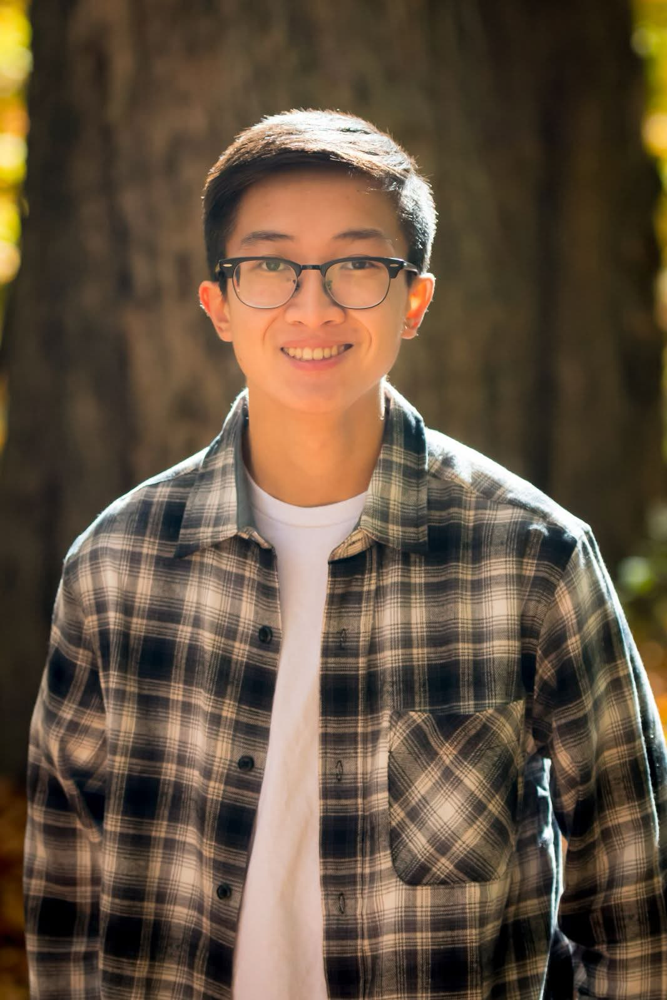

Portfolio
Noah Mariano
I build embedded systems and electrical projects for coursework and personal projects, shown here for instructors and anyone reviewing my work.
01 — About
A short introduction.
Hello,
My name is Noah Mariano. I am a current fourth-year student at Worcester Polytecnic Institute working towards my B.S. in Electrical & Computer Engineering. Throughout my time at WPI, I have gained hands-on experience through a variety of ECE projects, while also building on the broader engineering foundation I developed at Blackstone Valley Tech, a vocational high school. These experiences experiences sparked my interest in developing practical solutions by combining software and hardware, and I enjoy seeing ideas come to life through engineering. I hope to continue exploring embedded systems and other areas of ECE that bridge the gap between code and the physical world.
Please find my contact and resume at the bottom of this page. You may also find additional projects and works in the cards below or in the tab in the top right.
Thank you for checking out my website!
Skills Summary
- MATLAB
- Verilog
- Revit
- SOLIDWORKS
- Vivado
- Multisim
- LTSPICE
02 — Work
Projects
These are some of the projects I've worked on over the years whether its a school project or a passion project.
Sample · Code
Intersection Traffic Controller
A small FPGA controller that mimics conditions and statuses of a traffic light in an intersection.
Sample · Code
Real-Time Snake Game
Microcontroller Snake Game optimized using FreeRTOS task scheduling.
Sample · Writing
Strategic Backyard Conservation Research
A short essay about showing unfinished work. Point this at your own writing.
Sample · Code
Embedded Time and Temperature Display
Developed a system using MSP430 to measure temperature using ADCs and ACLK-based tiemrs.
Sample · Video
Hawaii Trip
A hobby video made to summarize my stay in Hawaii for school.
Sample · Design
Redesigning a Locker Room
Physically measured and mapped a country club locker room in Revit. Usign the room measurements, I redesigned it with client requirements.
Sample · Video
Universal Trip
A hobby video made to summarize my trip to Universal with friends.
Nothing in this category yet. Add a project with this tag, or choose another filter.
03 — Contact
Say hello.
You can contact me through my email or the platforms below.